Markdown Plus 可以直接在 Chrome 中阅读本地 Markdown，文件列表和大纲就在正文旁边。你可以从头跟着操作，也可以从目录跳到当前需要的功能。
截图展示当前扩展程序的界面，文档及状态为演示数据。截图中的界面语言与本页一致，示例文档仍为英文。点击图片可查看原图。Chrome 自带对话框的按钮名称取决于浏览器语言。
安装并打开第一份文档
安装扩展程序，开启本地文件访问权限，然后用 Chrome 打开 Markdown。完成这几步，就能开始阅读并继续体验其他功能。
- 打开上方的官方 Chrome 应用商店链接。选择添加至 Chrome，再确认添加扩展程序。需要 Chrome 116 或更新版本。
- 在地址栏输入
chrome://extensions，找到 Markdown Plus → 详情（Details），开启允许访问文件网址（Allow access to file URLs）。这项权限让扩展程序读取你在 Chrome 中打开的本地文档。 - 把本地 Markdown 文件拖入 Chrome 标签页，或使用下方的打开文件快捷键。支持直接打开
.md、.markdown、.mdown和.mdc。若标签页在授权前已打开，请刷新。 - 在 Chrome 的扩展程序菜单中固定 Markdown Plus，方便随时打开。点击工具栏图标后，可以看到阅读、编辑器、插件和最近四个标签。
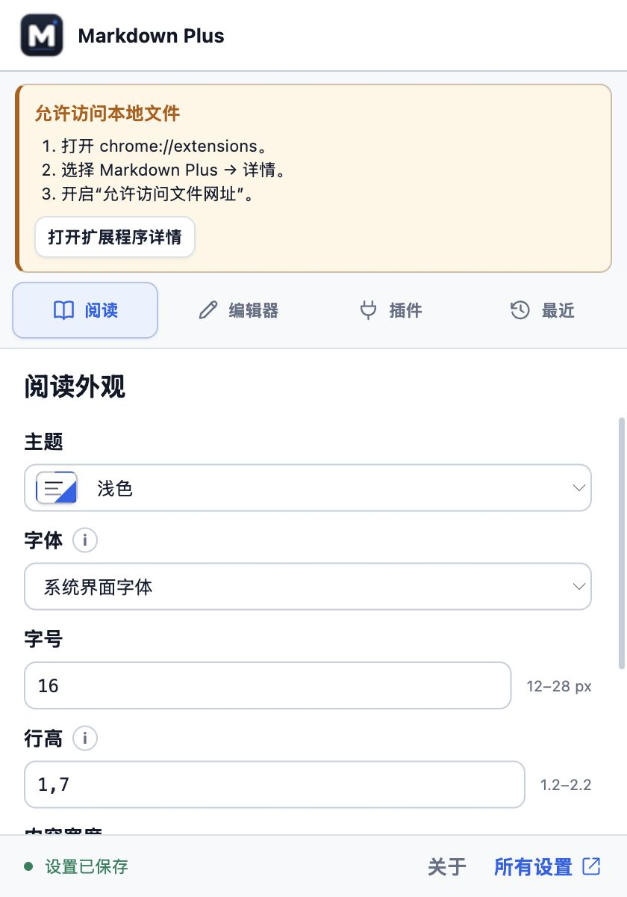
查看完整截图用示例文档试一试
下载 markdown-plus-tour.md，保存到电脑后用 Chrome 打开。文件包含标题、任务列表、表格、代码、提示块、公式和 Mermaid 图表，可用于接下来的练习。示例正文为英文。
浏览文件与使用大纲
左侧的文件面板用于切换文档，右侧的大纲用于跳转标题，上方图标提供文档操作。需要更多阅读空间时，可以收起侧栏，或拖动边缘调整宽度。
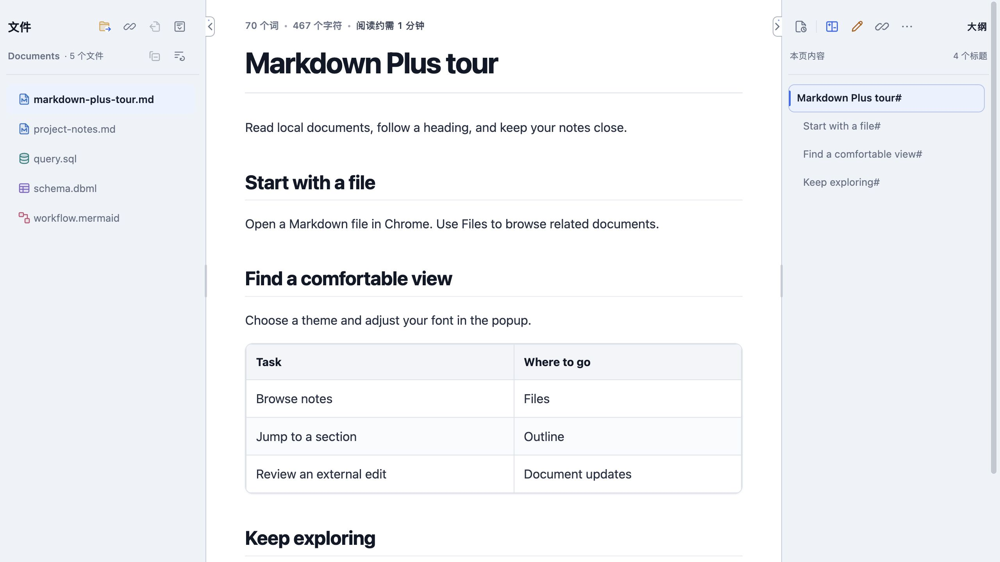
查看完整截图界面分区速览
- 文件：打开其他文档或文件夹。
- 正文：阅读排版后的文档。
- 大纲：快速跳转到标题。
- 操作栏：更新、编辑、打印和导出。
打开整个文件夹
在文件面板点击打开文件夹…，选择笔记或项目文档所在的目录，并按 Chrome 提示授权。之后就能展开子目录、选择文件。下次打开浏览器时，Chrome 可能要求重新授权。
新增、删除或重命名文件后，点击刷新文件列表重新扫描目录。这个按钮只更新文件树。若仍有文件缺失，请检查所有设置 → 文件与工作区中的 .gitignore 规则及扫描限制，再刷新一次。
点击大纲中的标题即可跳到对应段落。大纲取自 Markdown 原文的标题。窗口较窄时，部分命令会收进文档操作栏的三点菜单。
| 文件类型 | 打开方式 |
|---|---|
.md · .markdown · .mdown · .mdc | 直接在 Chrome 中打开，或通过“文件”面板打开。 |
.txt · .sql · .dbml · .mermaid | 先打开 Markdown 文件，再在“文件”面板中选择所需文件。 |
| 图片 | PNG、JPG/JPEG、GIF、WebP、AVIF、BMP、ICO、APNG 和 SVG。通过“文件”面板打开。 |
TXT 显示纯文本，SQL 和 DBML 支持语法高亮。DBML 用于查看源代码，不会生成数据库图。这些格式在此仅供阅读；独立 Mermaid 提供图表/源代码切换，Markdown 则额外支持大纲、实验性编辑和文档导出。
在当前文档或多个文件中查找
以下搜索流程已在开发源码中实现，尚未分配发布版本。尚未确认 Chrome 应用商店中的安装包是否包含此功能。
按 Cmd/Ctrl + F 在阅读内容中查找。焦点位于编辑器时，仍使用编辑器自己的查找与替换。若要搜索整个页面（包括侧栏中可见的文字），请使用 Chrome 菜单中的查找；浏览器无法搜索尚未显示在页面中的行。
点击文件面板中的放大镜，或按 Ctrl + Shift + F，搜索当前文件夹或工作区内受支持的文本文件内容。macOS 上也使用 Control，而非 Command。文件面板已有可搜索范围时，无需再次选择文件夹。只有文件树区域切换为搜索，面板顶部保持原位。搜索包含当前未保存的编辑内容，以及现有排除规则和扫描限制允许的子目录文件。
可组合使用Aa — 区分大小写、ab — 全字匹配和Á — 区分变音符号。默认忽略大小写、允许子串匹配，并区分变音符号。关闭变音符号匹配后，hai 可匹配 hải，duong 可匹配 đường。暂不支持正则表达式。
输入停止 250 ms 后开始跨文件搜索；在搜索框中按 Enter 可立即执行。等待新结果时，旧行保留显示但无法打开。结果按文件分组，显示行号和简短片段。打开结果会高亮对应位置，键盘焦点仍留在列表中；按 F4，或 Shift + F4，打开下一处或上一处可见结果。隐藏的 Markdown 语法可能在只读源码视图中打开。黄色表示匹配项，橙色表示当前匹配项。
搜索会在内存中临时保留有限的文件内容，以便更快地返回结果。匹配过程在你的设备上完成。重新搜索会读取当前列表中文件的最新内容；刷新文件列表用于发现新增、删除或重命名的文件。若文件夹是通过快照方式打开，需重新选择文件夹才能读取新内容。搜索不会持续监控所有文件，也不会保存永久的内容索引。
文件超过 2 MiB、搜索达到 2,000 个匹配项或用完 15 秒处理时限时，结果可能不完整。请查看提示，按需缩小查询或刷新。搜索不包含图片内容。
调到适合自己的阅读方式
点击 Markdown Plus 图标，打开阅读标签。选好主题，再调整字号、行高和正文宽度，直到读起来舒服。这些设置会沿用到其他文档。
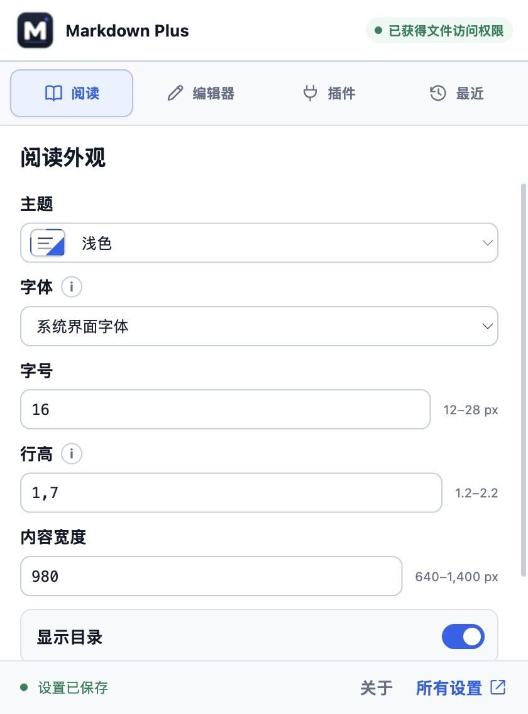
查看完整截图字体与字号
选择字体、12–28 px 的字号和 1.2–2.2 的行高。字体预设优先使用电脑已安装的字体，缺少时会使用后备字体。
正文宽度与侧栏
设置 640–1400 px 的正文宽度，并决定是否显示目录。在常规中可隐藏文档统计或调整滚动条显示。统计包括词数、含空格的字符数和预计阅读时间。
需要重新调整时，重置阅读界面可以恢复默认主题选择、排版和布局。界面语言在所有设置 → 常规 → 界面语言中切换，不会翻译文档正文。
长文档可以用返回顶部回到开头。更换主题、字体或布局只影响显示方式，保存在电脑上的 Markdown 文件保持原样。
代码、表格与更多内容
除了标题和段落，还能阅读高亮代码、表格、任务列表、公式和提示块。相关功能默认开启，可以在弹出窗口的插件标签中分别开关。
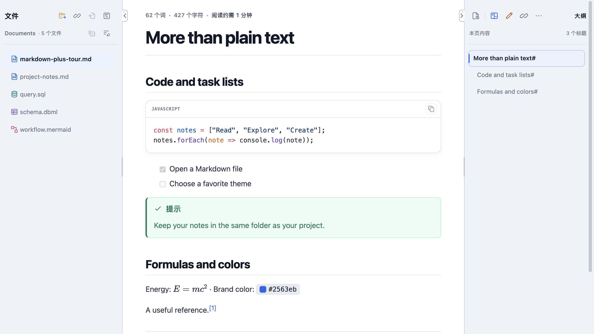
查看完整截图代码与表格
围栏代码块支持语法高亮和复制，表格也会以更易读的样式展示。在代码块开头标明语言，例如 javascript，即可匹配对应语法。
任务列表、提示块与脚注
Markdown Plus 支持 GitHub 提示块、脚注、emoji 和标题链接。阅读模式下的任务复选框只供查看；要更改完成状态，请修改 Markdown 原文。
公式与颜色
KaTeX 支持行内公式和独立公式块。颜色预览会在支持的颜色值旁显示色块，点击后可复制 HEX、RGB 或 HSL。
## A small plan
- [x] Open a Markdown file
- [ ] Try a new theme
> [!TIP]
> Keep your notes close to your code.
Inline math: $E = mc^2$
A useful color: #2563eb按需开关功能
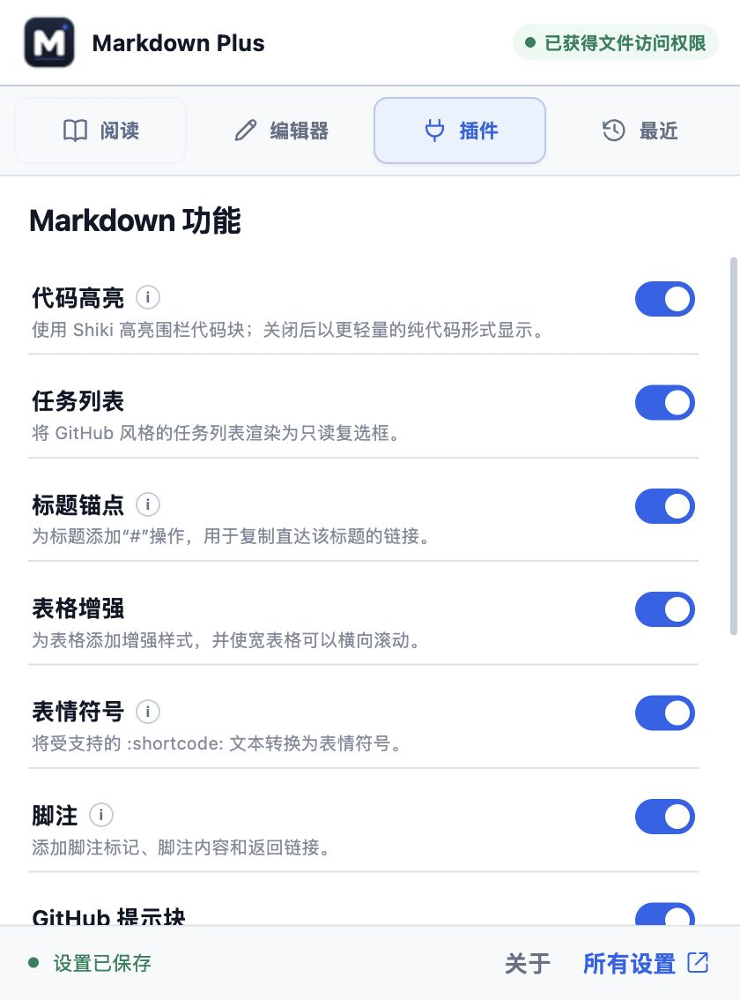
查看完整截图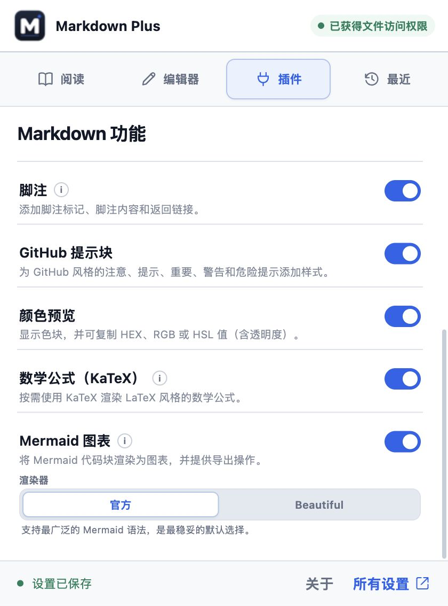
查看完整截图在练习文件中跳转到“A diagram”，复制 JavaScript 代码，再找到公式和 #2563eb 颜色值。如果仍显示为原始文本，请检查对应插件是否开启。
查看图表与图片
开启 Mermaid 功能后，标记为 mermaid 的代码块会显示为图表。独立的 .mermaid 文件也可以从文件面板打开，并切换图表和源代码。
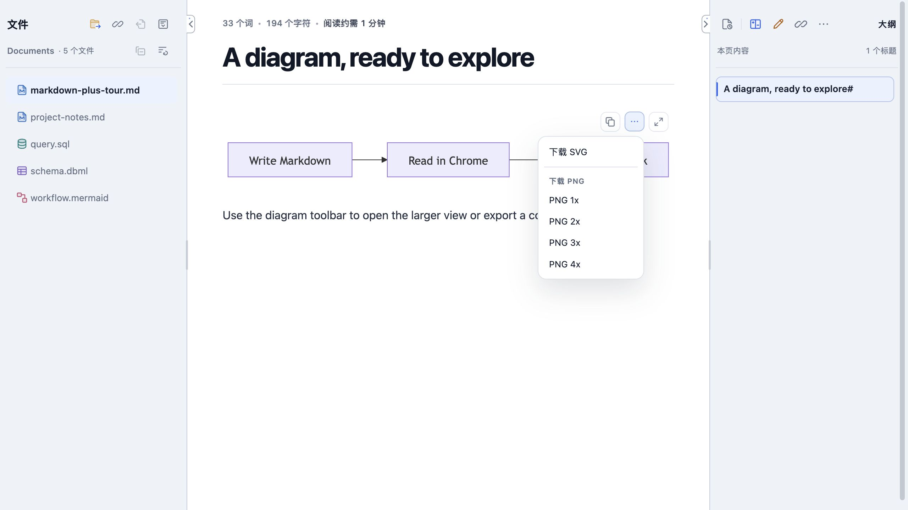
查看完整截图- 点击图表或图片的展开按钮，在大图查看器中缩放、适应窗口和拖动查看细节。关闭后回到文档。
- Mermaid 支持复制源代码，以及导出 SVG 或 PNG。PNG 可选 1×–4× 倍率。需要矢量图时选 SVG，需要更多像素时提高 PNG 倍率。
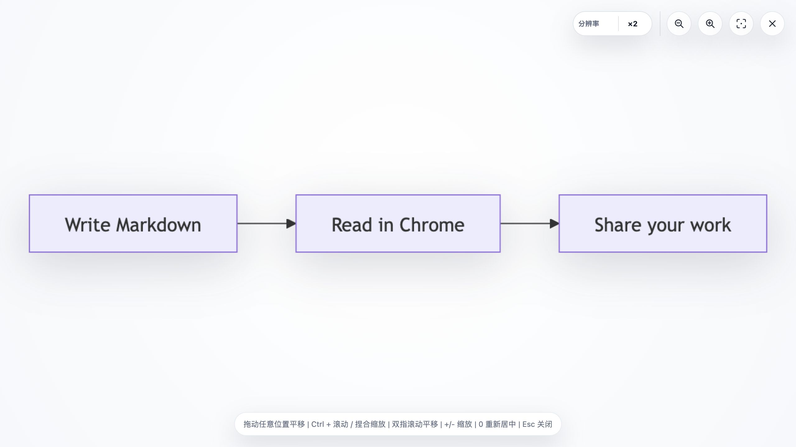
查看完整截图Mermaid 和 SVG 的大图查看器提供分辨率设置，与 缩放相互独立。悬停、键盘聚焦或点击后会显示减号/加号，每次调整 0.25，从 1× 到最高 8×，实际受图片尺寸和内存上限约束。显示“最高”时，表示这张图片无法继续提高分辨率。调整仅影响当前预览，不修改源文件或导出文件。
在弹出窗口 → 插件中，官方渲染器支持更广的 Mermaid 语法，Beautiful 则提供另一种布局。如果 Beautiful 无法渲染，先切回官方，再检查语法。
主题与背景
在弹出窗口 → 阅读 → 主题，或所有设置 → 主题 → 当前阅读主题中选择内置主题。浅色、深色、高对比度和彩色主题都使用相同的阅读设置。
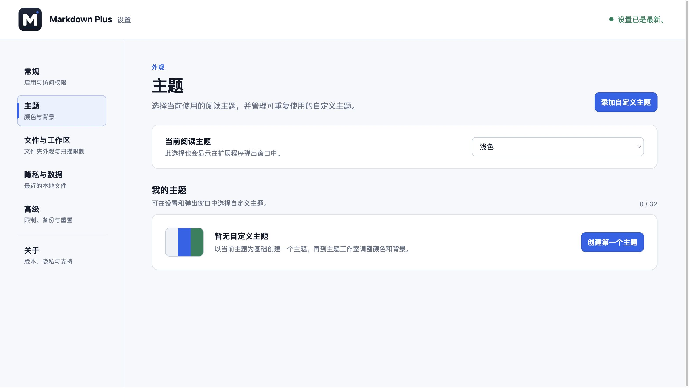
查看完整截图创建自定义主题
- 选择添加自定义主题，输入名称并选好基础主题。更换基础主题会重置草稿配色，因此建议先选好。
- 调整页面、正文、面板、文字、标题、链接和代码颜色，同时查看实时预览，注意次要文字是否清晰。
- 在代码高亮中，沿用基础主题或选择内置语法配色。这会调整文档中代码块的颜色。
- 选择背景，按需调整适配方式和调暗程度，最后点击创建主题或保存更改。草稿只有确认后才会保存。
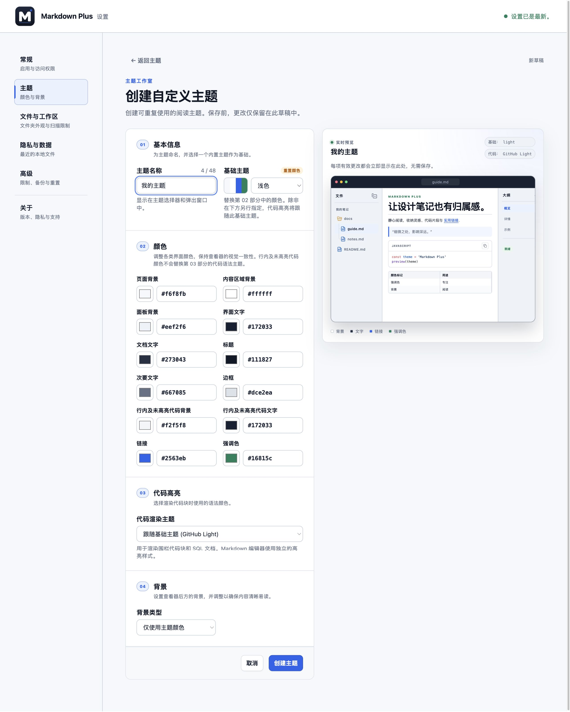
查看完整截图选择背景类型
可以保留主题底色、选择纯色背景、创建双色渐变，或添加最大 5 MiB 的本地 PNG、JPEG、WebP、AVIF、GIF、APNG。图片支持适配、位置和重复设置；可用调暗程度保证正文清晰。
动画效果可选跟随系统、播放动画或静止。跟随系统会尊重电脑的减少动态效果偏好；静止会隐藏动态背景图片，而不是暂停在某一帧。
更新文档并比较更改
在 VS Code 等其他应用中编辑并保存文件后，Markdown Plus 可以检查并加载新内容。在所有设置 → 常规 → 文档更新中选择更新方式。
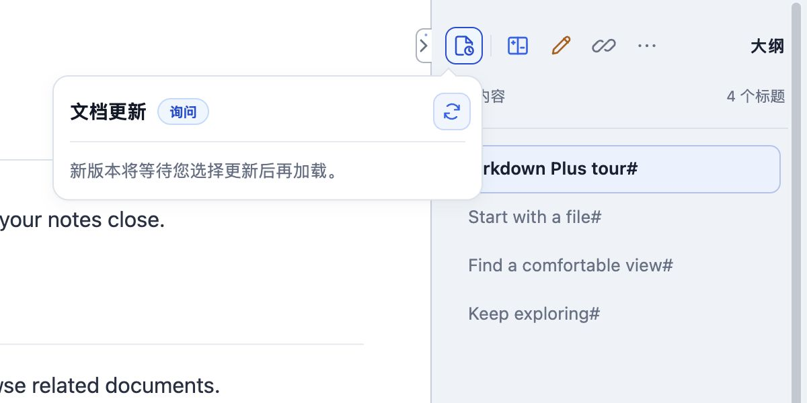
查看完整截图| 模式 | 行为 |
|---|---|
| 询问 — 默认 | 检查更改，等待你加载新版本。适合希望先比较、再更新正文的情况。 |
| 自动 | 文件停止变化且你暂停操作后，加载已保存的新内容，并尽量保留阅读位置。 |
| 关闭 | 停止自动检查，仍可使用立即检查手动检查一次。 |
打开文档操作栏中的文档更新，可以检查或加载新版本。有比较可用时，点击查看更改，查看增加和删除的源代码行。Markdown 还会列出受影响的章节；图片支持更新，但没有源代码比较。
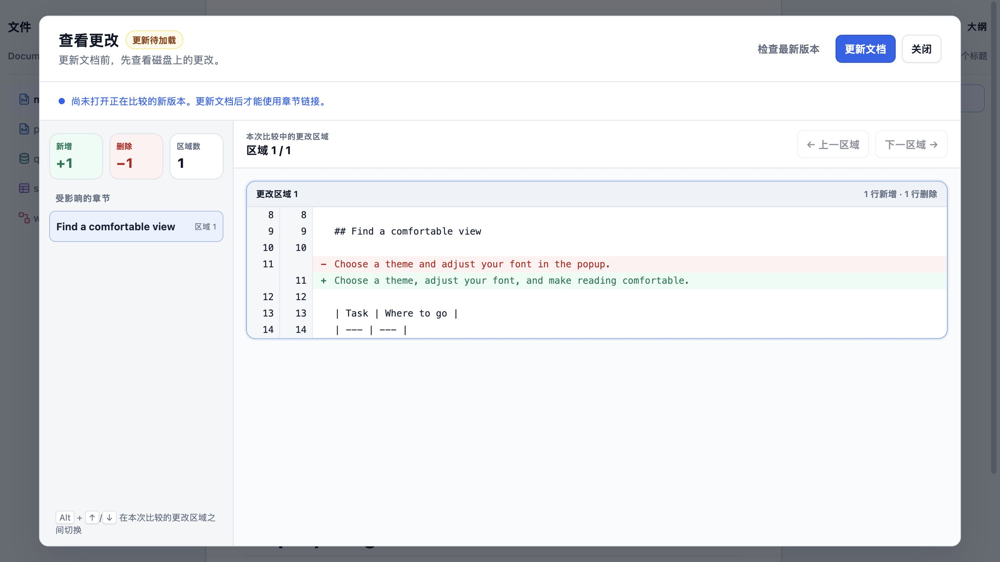
查看完整截图已打开的比较会保留当前版本，直到你选择查看最新更改。自动模式仍可能更新后面的正文；想自己决定何时更新时，请选询问。
编辑与实时预览
实验性功能 · 默认关闭
可以直接在 Chrome 中编辑 Markdown，一侧输入源代码，另一侧查看实时预览。使用前需开启编辑器，并重新选择准确的原文件，才能保存回去。
- 打开弹出窗口 → 编辑器，开启编辑器功能。回到 Markdown 文档，点击铅笔图标“编辑 Markdown”。
- 在确认对话框中点击“验证文件并编辑”，再选择原始文件，核对文件名和所在目录。扩展程序会验证原始文件，并请求向该文件保存的权限。
- 在代码区域编辑，在另一侧查看效果。编辑器支持查找替换，专注模式可以隐藏预览。弹出窗口的编辑器标签还可调整字号、制表宽度、自动换行和行号。
- 点击保存或按 Ctrl + S / ⌘ + S，等到保存成功后再离开。打印或导出前，请先退出编辑模式。
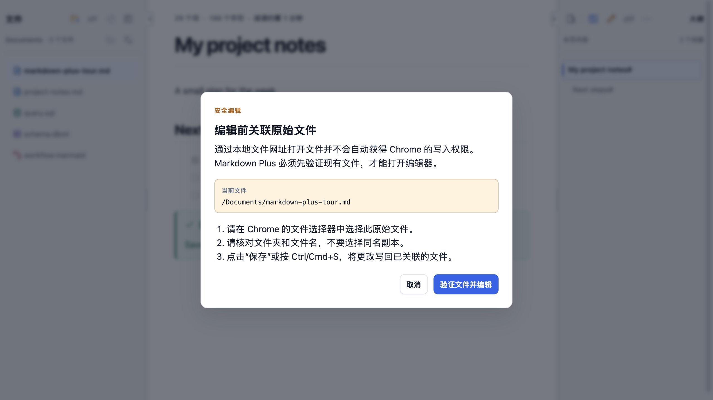
查看完整截图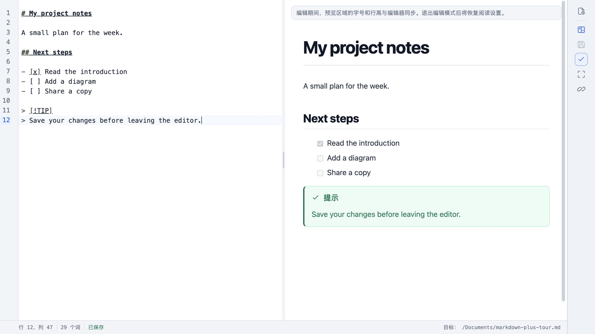
查看完整截图打印、导出与分享
可以打印文档、保存 PDF，或导出 HTML/Word 副本。命令位于文档操作栏；窗口较窄时，请打开三点菜单。
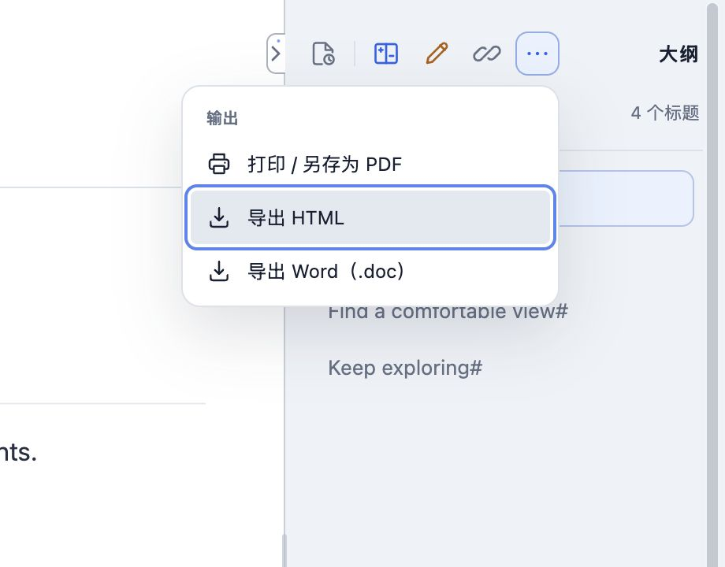
查看完整截图打印或保存 PDF
选择打印 / 另存为 PDF，在 Chrome 打印对话框中选择打印机或另存为 PDF，检查预览和页面设置后保存。
导出 Markdown 文档
Markdown 文档支持导出 HTML 和导出 Word (.doc)。根据窗口宽度，这两个命令可能位于导出文档菜单或三点菜单中。.doc 是 Word 兼容文件；图表的 SVG/PNG 使用图表旁的独立菜单。
请先退出编辑模式。文档在本地处理，但文档引用的远程资源可能连接其托管服务器；部分导出 HTML 的资源可能使用 CDN，详见隐私政策。
阅读隐私政策设置、隐私与备份
点击弹出窗口底部的所有设置，打开完整设置页。大多数开关和选项即时保存；数值限制使用保存更改，自定义主题也有自己的保存按钮。
- 常规：语言、启用状态、滚动条、统计、更新模式和文件访问状态。访问权限本身需要在 Chrome 扩展程序的详情页面开启。
- 文件与工作区：层级引导线、
.gitignore排除、工作区恢复和扫描限制。深度 0 只扫描所选根目录；扫描设置在下次扫描或刷新时生效。 - 隐私与数据：开启最近文件记录、调整保留数量或清空列表。弹出窗口 → 最近可重新打开本地 Markdown。清除记录不会删除原文件。
- 高级：设置独立 TXT、SQL、DBML 和 Mermaid 文件的查看大小限制，下次打开时生效，不适用于 Markdown。它与文档更新的 5 MiB 上限是两回事。
- 关于：查看已安装版本、兼容信息和支持链接。反馈问题时请附上版本。
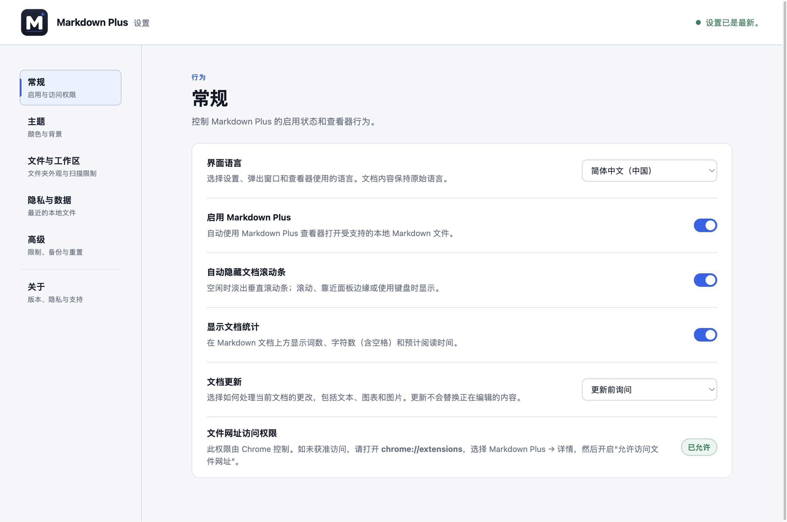
查看完整截图备份与恢复设置
在高级中点击导出 JSON 下载备份。恢复时，在导入设置中选择 JSON 文件，文件会先验证再保存。备份包含偏好和自定义主题，不含文档、最近文件记录或背景图片。
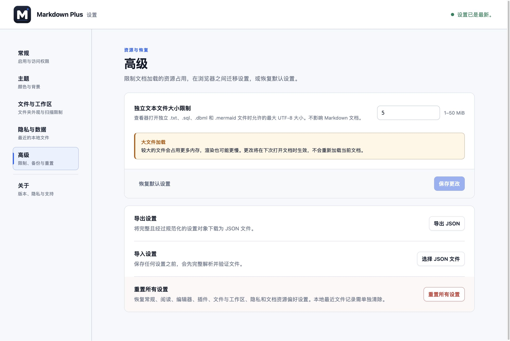
查看完整截图文档在浏览器中处理，不上传至开发者运营的服务。偏好可能通过 Chrome 同步，最近路径、编辑文件连接和背景图片保留在设备上。切换本网站主题只影响网站本身。
常见问题
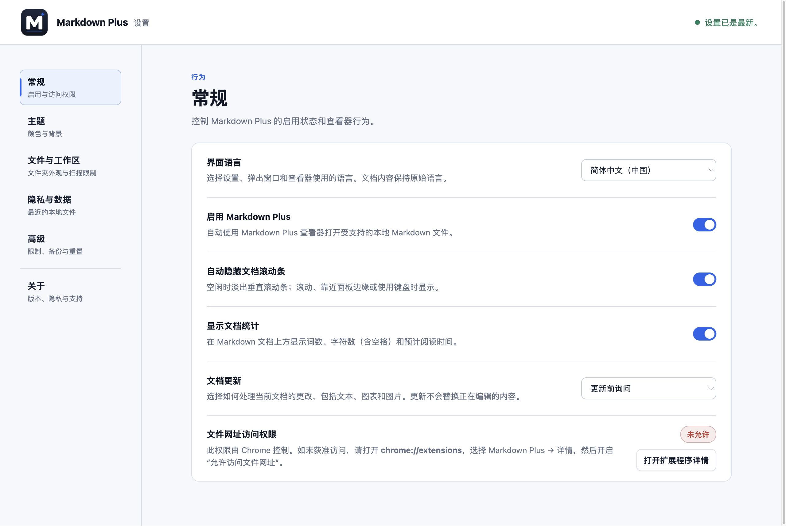
查看完整截图Markdown 仍显示为纯文本。
在 Chrome → 扩展程序 → Markdown Plus → 详情中开启允许访问文件网址。确认所有设置 → 常规 → 启用 Markdown Plus 已开启，文件扩展名是 .md/.markdown/.mdown/.mdc，然后刷新标签页。
可以在网站上使用，或直接打开 SQL 吗？
扩展程序在本地 Markdown 上启动。远程 Markdown 请先下载，再打开本地副本。SQL、DBML、纯文本、Mermaid 和图片需要先打开 Markdown，再从“文件”面板中选择。
文件树中缺少文件。
检查文件与工作区的 .gitignore 以及深度、文件数和文件夹数限制，然后刷新文件列表。若有提示请重新授权。最近文件若已移动，请从新位置重新打开。
其他应用已保存，正文却没变化。
使用文档更新 → 立即检查，询问模式下还需加载更新。保持标签页可见，并检查 5 MiB 上限。刷新文件列表只更新目录；快照工作区需要重新选择文件夹。
编辑器保存提示冲突。
原文件在编辑开始后被其他应用修改。先复制需要保留的草稿，再查看磁盘版本并重新打开正确文件。保存不会强制覆盖；若 Chrome 报访问错误，请检查写入权限。
另一台设备上没有背景图片。
背景图片不同步，也不包含在 JSON 备份中。请在另一台设备编辑自定义主题，重新选择原图并保存。
设置无法保存。
查看保存状态中的具体错误。修改过于频繁时稍后重试；若 Chrome 提示设置存储已满，请减少自定义主题数据或删除不用的主题，再重试。
仍未解决？提交 issue 时，请附上 Chrome 与扩展程序版本、已尝试的步骤，以及去除私人内容的小示例。
在 GitHub 获取帮助